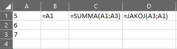

9 Excelin perusteet
Microsoft Excel on taulukkolaskentaohjelma. Tällä tarkoitetaan, että kaikki työ tehdään taulukoissa, joita Excel kutsuu myös työkirjoiksi. Työkirjan tunnistaa päätteestä .xlsx1. Jokainen työkirja sisältää yhden tai useamman työlehtiön, joiden sisältä löytyy taulukkoalue.
1 Aikaisemmissa Excel-versioissa myös .xls. Toinen yleinen taulukkomuoto on .csv.
Taulukkoalue jaetaan soluihin, joihin viitataan niiden rivi- ja sarakeosoitteella. Excelissä rivit ovat numeroituna yhdestä ylöspäin, ja sarakkeet merkitään kirjaimilla A-Z. Jos sarakkeita on useampi kuin 26, Excel automaattisesti aloittaa seuraavan sarakesarjan nimen AA, AB, ja niin eteenpäin.
Excelissä kaikki työ tehdään taulukkoalueella. Voit lisätä ja poistaa arvoja (numeroita, tekstiä, verkko-osoitteita, melkein mitä tahansa), tehdä laskentoja arvoille, tuottaa kuvioita, automatisoida analyysia, ja vaikka mitä.
9.1 Arvotyypit
Excelissä on neljä alkeellista arvo- tai datatyyppiä: numerot, teksti, loogiset ja virheet.
Numerodata on, kuten nimi ehdottaa, numeroita. Ne voivat olla desimaalilukuja (esim. 0.5), kokonaislukuja (13), prosentteja (15%), päivämääriä (16/03/2005) tai jopa puhelinnumeroita (+358501234567). Koska Exceliä ei sinänsä kiinnosta millainen numeroarvo on kyseessä, voi joskus tapahtua hassuja odottamattomuuksia. Excel antaa esimerkiksi sinun ynnätä päivämäärän ja prosentin yhteen - mutta mitä tulos on, sen tietää vain Excel itse.
Tekstidata on ihmisluettavaa tekstiä, kuten lauseita, sanoja, merkkejä tai fyysisiä osoitteita. Näille löytyy omat työkalut Excelissä, joten työkalulla pystyt myös käsittelemään tekstidataa koneella.
Loogisia tai totuusarvoja ovat arvot TOSI ja EPÄTOSI. Näitä käytetään paljon Excelissä, myöskin funktioiden sisällä, joten niiden tunnistaminen on tärkeää. Jos yrität ynnätä loogisia arvoja yhteen, Excel yleensä pakottaa ne numeromuotoon: TOSI = 1, EPÄTOSI = 0. Loogisille arvoille löytyy neljä perustoimintoa: JA, TAI, EHDOTON.TAI, EI. Näistä lisää kohdassa Alaluku 9.3.
Virhearvot ovat Excelin erikoisuus. Jos Excel tunnistaa jonkun laskuvirheen tai muun teknisen virheen, se palauttaa yleensä virhearvon. Näitä voi myös itse tuottaa virhearvofunktioilla, jos on tarvetta. Virhearvot ovat:
#NIMI? Soluviittaus ei ole oikein, kirjoitusvirhe funktiossa tai puuttuvat lainausmerkit.
#JAKO/0 Yrität jakaa jonkun numeron nollalla, mikä ei ole mahdollista.
#VIITE! Viittaus menee jotenkin pieleen.
#NUMERO! Arvo, jonka Excel yrittää laskea, on liian iso yhdelle solulle. Voi myös esiintyä virheellisesti kirjoitetussa funktiossa.
#N/A Voit käyttää tätä arvoa itse, jos haluat Excelin hyppäävän yli jonkun solun tilapäisesti. Joskus Excel myös automaattisesti korvaa tämän arvon jollain muulla. Ole siis varovainen sen käytön kanssa!
#ARVO! Yrität tehdä jotain arvotyypille, jota sille ei voi tehdä. Esimerkiksi ynnäät tekstiä ja numeroita yhteen.
#TYHJÄ! Yrität hakea kahden matriisin risteämiskohtia, mutta sellaista ei ole. Esiintyy myös jos merkitset useamman solualueen ilman puolipilkkua välissä, sekä joissain muissa tilanteissa.
9.2 Arvojen manipulointi Excelissä
“Manipulointi” voi kuulostaa pahaenteiseltä, mutta tässä kontekstissa tarkoitetaan yksinkertaisesti arvojen muokkaamista, muuttamista ja hyödyntämistä laskennoissa.
Excelin operaattorit voidaan jakaa neljään kategoriaan: aritmeettiset, vertailevat, tekstiä yhdistävät ja viittausoperaattorit. Alla olevassa taulukossa selitetään kaikki operaattorit ja niiden toiminnat.
| Merkki | Merkitys | Esimerkki |
|---|---|---|
| Aritmeettiset operaattorit | ||
+ (plus) |
Ynnääminen | 2 + 3 = 5 |
- (minus) |
Vähentäminen | 2 - 5 = -3 |
* (tähti) |
Kertominen | 4 * 2 = 8 |
/ (vinoviiva) |
Jakaminen | 8 / 4 = 2 |
% (prosentti) |
Prosentti | 20% |
^ (karetti) |
Potenssi | 5 ^ 2 = 25 |
| Vertailevat operaattorit | ||
= (yhtäläisyys) |
Yhtä kuin | 1 = 2 (epätosi) |
> (suuruus) |
Suurempi kuin | 5 > 1 (tosi) |
< (pienuus) |
Pienempi kuin | 6 < 9 (tosi) |
>= (suuruus ja yhtäläisyys) |
Suurempi tai yhtä kuin | 1 >= 2 (epätosi) |
<= (pienuus ja yhtäläisyys) |
Pienempi tai yhtä kuin | 6 <= 6 (tosi) |
<> (pienuus ja suuruus) |
Ei yhtä kuin / eri kuin | 7 <> 9 (tosi) |
| Tekstiä yhdistävät operaattorit | ||
& (ampersandi) |
Yhdistää kaksi tekstiarvoa yhdeksi. HUOM: Ei lisää välilyöntejä tai muita merkkejä väliin! | "Pelastus"&"laitos" = "Pelastuslaitos" |
| Viiteoperaattorit | ||
: (kaksoispiste) |
Solualue | A1:A4 = A1, A2, A3, A4 |
; (puolipilkku) |
Yhdistää kaksi solualuetta yhdeksi | A1:A3;B1:B3 = A1, A2, A3, B1, B2, B3 |
| (välilyönti) | Hakee kahden solualueen yhteisen alueen viitteen | A1:D1 C1:C4 = C1 (ainoa solu, joka löytyy molemmista janoista) |
# (risuaita) |
Viittaa dynaamiseen matriisiin | A1# = Niin monta solua, kuin dynaaminen funktio solussa A1 tuottaa |
! (huutomerkki) |
Ilmaisee solualueen sijaitsevan jossain muualla | Taul1!A1 hakee solun A1 työlehtiöstä Taul1, vaikka olisit lehtiössä Taul4. |
Näiden lisäksi Excelissä voi käyttää sulkuja ( ) laskentajärjestyksen määrittelyyn. Tämä on erittäin suositeltavaa, sillä Excel ei aina noudata perinteistä laskentajärjestystä! Excel laskee vasemmalta oikealle, tietyn suosiojärjestyksen mukaan. Voit kuitenkin aina itse määritellä järjestyksen suluilla.
Aritmeettisia ja vertailevia operaattoreita käytetään kuten matematiikassa yleensä. Huomioi kuitenkin eri-kuin-operaattori <>, joka muotoillaan eri tavalla kuin monessa muussa kontekstissa.
Kun määrittelet soluun jotain laskettavaksi, eteen tulee aina yhtäläisyysmerkki =. Tämä kertoo Excelille, että seuraavaksi lasketaan jotain.
9.3 Loogisten ehtojen totuustaulukot
Kun käsittelemme loogisia ehtoja, voimme hyödyntää niin sanottuja totuustaulukoita. Nämä kertovat meille, mikä lopputulos on kun kaksi totuusarvoa yhdistetään tietyllä ehdolla.
JA-ehto täyttyy, kun molemmat totuusarvot ovat TOSI. Sen totuustaulukko on:
JA-ehto |
a = EPÄTOSI |
a = TOSI |
b = EPÄTOSI |
EPÄTOSI |
EPÄTOSI |
b = TOSI |
EPÄTOSI |
TOSI |
TAI-ehto täyttyy, kun jompikumpi totuusarvoista on TOSI (tai molemmat). sen totuustaulukko on:
TAI-ehto |
a = EPÄTOSI |
a = TOSI |
b = EPÄTOSI |
EPÄTOSI |
TOSI |
b = TOSI |
TOSI |
TOSI |
EHDOTON.TAI-ehto täyttyy, kun jompikumpi totuusarvoista on TOSI (mutta ei molemmat!). Sen totuustaulukko on:
EHDOTON.TAI-ehto |
a = EPÄTOSI |
a = TOSI |
b = EPÄTOSI |
EPÄTOSI |
TOSI |
b = TOSI |
TOSI |
EPÄTOSI |
EI-ehto täyttyy, kun annettu ehto on EPÄTOSI. Toisin sanoen, tämä ehto kääntää totuusarvon toisinpäin. Sen totuustaulukko on:
EI-ehto |
a = EPÄTOSI |
a = TOSI |
TOSI |
EPÄTOSI |
9.4 Solujen muokkaaminen
9.5 Viittaaminen ja osoitteet
Yksinkertaisimmillaan viittaaminen toiseen soluun onnistuu Excelissä samoin kuin yleisen laskennan kirjoittaminen.


Kuvan 9.1 (b) solussa B1 tehdään suora viittaus solun A1 sisältöön: =A12. Excel osaa silloin täyttää solun B1 solun A1 sisällöllä, mitä tahansa se on.
2 Voit asettaa kaavat näkyville tai pois näkyvistä kohdasta Kaavat > Näytä kaavat.
Vittaukset voivat olla pitkäkin ketju - B1 voi viitata A1:een, joka viittaa C4:ään, joka viittaa jonnekin muualle, ja niin eteenpäin. On kuitenkin suositeltavaa pitää viittausketju lyhyenä, koska sen seuraaminen voi olla hankalaa ketjun pidentyessä.
Kaksoispisteillä : voit viitata solualueeseen. Tällöin Excel osaa hakea kaikki solut ensimmäisen ja toisen soluviittauksen välillä. Esimerkissä solussa C1 on summafunktio, jonka parametriksi on asetettu alue A1:A3. Excel hakee silloin kaikki arvot soluissa {A1, A2, A3}3, ja palauttaa ne summafunktiolle. Summafunktio laskee sitten palautetut solut yhteen, ja palauttaa lopputuloksen.
3 Voit määritellä Excelissä arvojanan käyttäen aaltosulkeita { }. Tämä on hyödyllistä, jos haluat esimerkiksi kokeilla jotain kaavaa tilapäisellä tiedolla, mutta et jostain syystä voi lisätä tietoa soluihin ja viitata niihin. Käytän aaltosulkeita tässä kirjassa sekä Excelin muodossa että matemaattisena merkintänä, mutta tulkinta on aina sama: arvot sulkujen välillä ovat yksiulotteinen matriisi, eli lista arvoja.
Esimerkkikuvassa solussa D1 on käytetty JAKOJ-funktiota, joka palauttaa jonkun jakolaskun jäännöksen. Sen ensimmäinen parametri on jakolaskun jaettava luku ja toinen parametri on laskun jakaja. Koska funktio viittaa soluihin A3; A1, Excel ajaa funktion asetuksilla =JAKOJ(7; 5), jolloin tulokseksi tulee 2.
Viittaaminen voidaan siis ymmärtää eräänlaisena osoitteiden käyttönä. Jokaisella solulla on oma osoite, joka merkitään solun sarakekirjaimen ja rivinumeron avulla: solu B7 löytyy sarakkeesta B, riviltä 7.
9.6 Funktiot
Excelin laskennat tehdään funktioilla. Funktio on vähän kuin tehdas, joka ottaa sisään jonkun raakamateriaalin (arvon), tekee sille jotain (laskennan tai muunnoksen), ja sylkäisee ulos uuden tuotteen (uuden arvon).
Funktio aloitetaan aina yhtäsuuruusmerkillä =. Sen jälkeen tulee funktion nimi ISOILLA KIRJAIMILLA, esim. SUMMA tai AINUTKERTAISET.ARVOT. Jos funktiossa on useampi sana nimessä, ne erotellaan pisteellä .
Funktion lopussa on sulut (). Näiden sisälle asetetaan funktion parametrit, eli määritellään, mille arvolle jotain tulisi tehdä sekä muita funktion asetuksia.
Kun funktio suoritetaan, voidaan sanoa että funktio kutsutaan. Kun funktio on kutsuttu, se palauttaa jonkun arvon.
Esimerkkinä voidaan ottaa summafunktio:
=SUMMA(A1:A4)
Summafunktio ottaa yhden parametrin, jota voidaan kutsua alue-nimellä. Tämä parametri osoittaa funktiolle, mikä solualue pitäisi summata yhteen. Yllä olevassa esimerkissä tämä on määritelty alueeksi A1:A4, eli kaikki solut A1:n ja A4:n väliltä: A1 + A2 + A3 + A3.
Funktioihin voi syöttää joko suoran arvon tai viittauksen toiseen soluun, jossa on sopiva arvo. Jotkut funktiot, kuten summafunktio, ottavat matriisin parametrinä, jolloin määritellään useampi solu. Toiset, kuten =ONVIRH(), ottavat vain yhden arvon, eli yhden solun. Jotkut funktiot eivät ota mitään parametrejä, kuten funktio TOSI() (joka palauttaa totuusarvon TOSI, eli 1).
9.7 Dynaamiset matriisit
Excelin O365-versiossa uutena toimintona ovat dynaamiset matriisit. Vaikka nimi kuulostaakin hieman vaikealta, näiden käyttö on aika yksinkertaista.
Dynaaminen matriisi on tulos, jonka kaava on asetettu vain yhteen soluun, mutta joka levittyy useamman solun ylitse. Esimerkkinä voidaan käyttää SUODATA-funktiota. Funktio ottaa data-alueen sekä jonkun ehdon, ja palauttaa kaikki solut data-alueelta joiden rivit täyttävät kyseisen ehdon. Tämä tarkoittaa, että funktio voi palauttaa erikokoisia matriiseja, riippuen ehdosta.
Ennen vanhaan, Excelissä piti määritellä, kuinka suurelle alueelle matriisi palautetaan. Dynaamisten matriisien myötä näin ei enää ole! Yllä kuvailtu SUODATA-funktio palauttaa nyt niin suuren matriisin, kuin tarvitaan.
Dynaamisissa matriiseissa erikoisuus on, että matriisin palauttava funktio löytyy vain ensimmäisestä solusta (ylävasemmasta solusta, jos kyseessä on kaksiulotteinen matriisi; ylimmästä solusta, jos kyseessä on rivimatriisi; vasemmanpuolisesta solusta, jos kyseessä on sarakematriisi).
Kuvassa 9.2 esiintyy kaksi saraketta, joissa on alkuperäisiä arvoja. A-sarakkeessa arvot vaihtelevat yhden ja kymmenen välillä, ja B-sarakkeessa arvot ovat joku arvoista 0, 1, -1. Soluun D1 olen lisännyt SUODATA-funktion. Funktio ottaa kaikki arvot alueella A1:A10, ja palauttaa ne rivit, joiden vastaava arvo alueella B1:B10 ei ole -1.
Funktio palauttaa rivimatriisin, jossa on vähemmän rivejä kuin alkuperäisissä sarakkeissa - koska minähän suodatin pois kaikki joiden B-matriisin arvo on -1. Jos kuitenkin katsoo miten kaava esiintyy (Kuva 9.2 (b)), huomaa, että kaava on kirjoitettu vain ensimmäiseen soluun, D1. Koska SUODATA-funktio palauttaa dynaamisen matriisin, funktio levittyy tarvitsemalle alueelleen - tämän tunnistaa kuvasta haalean sinisestä laatikosta.
Dynaamiset matriisit ovat erittäin tehokkaita, koska niiden avulla et tarvitse etukäteen tietää, kuinka suurelle alueelle matriisin tulisi levittäytyä.
Dynaamisilla matriiseilla on ominaisvirhe: #LEVITTYMINEN! Tämä voi esiintyä mm. jos levittymisalueella on jokin arvo solussa, mikä estää levittymisen. Dynaamiset matriisit toimivat vain, jos koko levittymisalue on tyhjä!